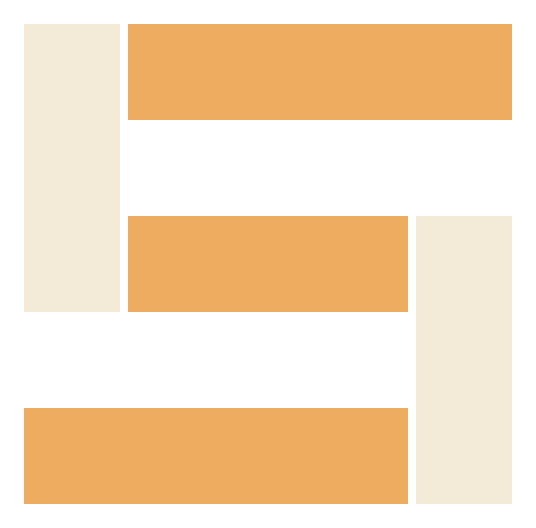

studWORKSHOP TOOLSYOUR WORKSHOP, CONNECTED.
Ready for your
next build.
stud brings the engine. Codex brings the conversation.
Keep your designs wherever you work.
Your projects
Choose an existing Stud project folder to add it to your workshop. Projects also appear when you use them with stud.
01
Connect to Codex
Checking…Install the stud command once. On macOS, setup also connects the Codex skill. Then ask Codex to open your project and show its viewer in the in-app browser.
Working from a terminal?
stud init my-project stud serve my-project stud validate my-project
02
Keep your tools current
Checking release channel…
Updates include the engine, viewer, CLI, and bundled skill. Connection status is shown above.